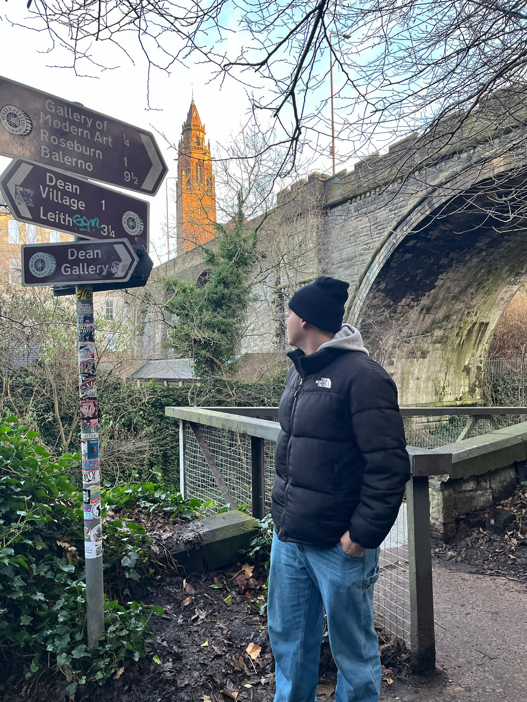

I am an IT Systems Technician with a strong interest in cybersecurity...
During my cybersecurity specialization, I gained hands-on experience in ethical hacking, digital forensics and network security through practical labs. I also developed skills in SOC operations, incident detection and response, as well as knowledge of cybersecurity regulations and legal frameworks.
During the Network Systems Administration (ASIR) program, I worked in hands-on environments based on real-world scenarios, managing production services and troubleshooting IT-related incidents. I gained experience in administering Linux and Windows systems, including domain management with Active Directory, as well as deploying and maintaining virtualized infrastructures using Proxmox. In addition, I worked with network services and SQL databases, automated tasks using Ansible playbooks, and developed scripts in Python. I also participated in database design and management, building a solid technical foundation focused on systems administration, automation, and problem-solving in professional IT environments.
During the SMX program, I acquired hands-on experience in hardware maintenance, operating system installation and configuration (Windows and Linux), and basic network setup. I worked on troubleshooting technical issues, system support and user assistance in practical environments. I also developed skills in diagnosing hardware and software failures, configuring network services at a basic level, and supporting IT infrastructures, building a strong technical foundation for further specialization in systems administration and cybersecurity.
Level 1/2 technical support to users, resolving incidents in systems, networks and services. Configuration and maintenance of computers, routers, servers and local networks. Hardware assembly and maintenance, database and software administration, and basic web development. Experience in troubleshooting, analysis and problem-solving in production environments.
Level 1 technical support, incident management through ticketing systems and problem resolution in IT environments. Maintenance of hardware, networks and rack organization.
Level 1 technical support, incident resolution and system maintenance. Administration of the corporate web portal and management of the Moodle platform.
Linux & Windows systems administration, Active Directory/LDAP management and virtualization with Proxmox.
Knowledge in security operations, monitoring and incident response (SOC), combined with hands-on experience in penetration testing and vulnerability analysis.
Design, configuration and troubleshooting of network infrastructures, including routers, VLANs and enterprise environments. Experience in firewall configuration, traffic control and system hardening for enhanced security.
Automation of systems and processes using Ansible, Python and Bash scripting. Development of custom scripts for system administration, security tasks and infrastructure management.
Throughout my career, I have developed and contributed to multiple projects involving systems administration, cybersecurity, and infrastructure management. My work includes configuring production environments, implementing security measures, automating processes, and providing technical support in professional IT environments. I have hands-on experience working with Linux and Windows systems, network infrastructure, virtualization platforms, and security tools. Each project has allowed me to apply and expand my technical knowledge while following best practices and industry standards.